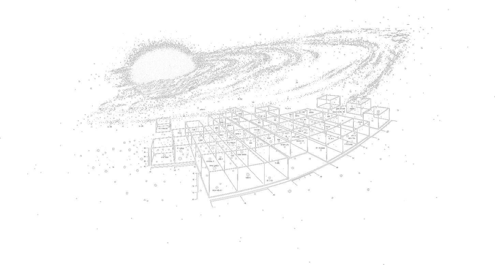
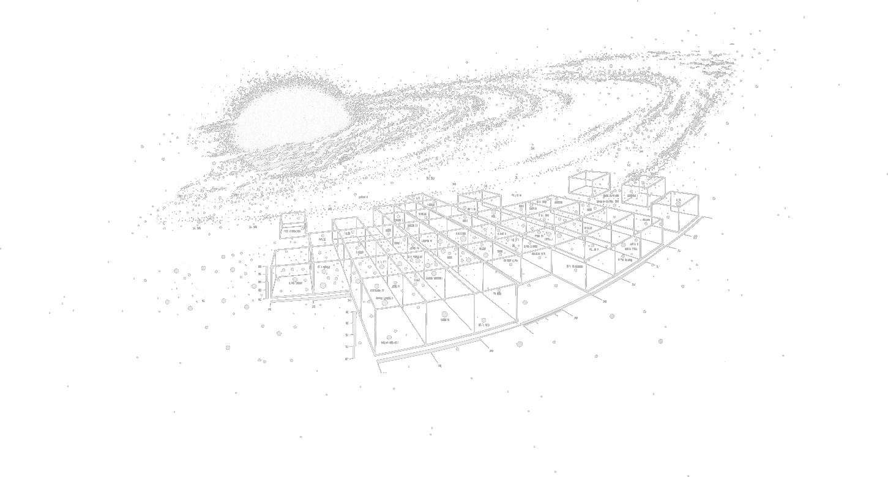

- NOVEMBER 18TH
- CYBERNETICS CONFERENCE
- 424 W 54th St, NYC
“The science of control and communication in the animal and the machine.”
— Norbert Wiener
The Cybernetics Conference will take up the subject of information and agency; bringing scholars, technicians, activists, and artists in dialogue to consider the ways informatic systems shape social organization.
How does the circulation
of media materialize as social behavior? Cybernetics, the discipline Nam June Paik once described as the “exploration of boundary regions between and across various existing sciences,” offers a powerful framework for reasoning about the complexities
of human–machine interaction.
This conference will ask how individuals and small coalitions might develop new strategies for engaging information systems which situate them as effective agents of change. Essential to this project is reading
technopolitics as more than an architecture of rules, but an artifact of cultural production—a cybernated social body, comprised of the aspirations, failures, and energies of a dynamic information ecosystem.
 
